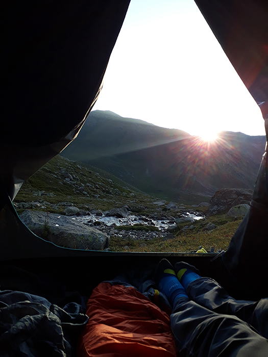
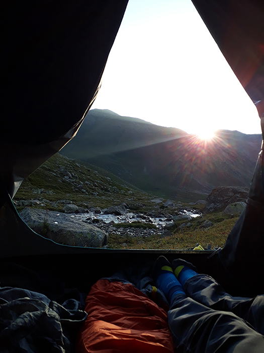
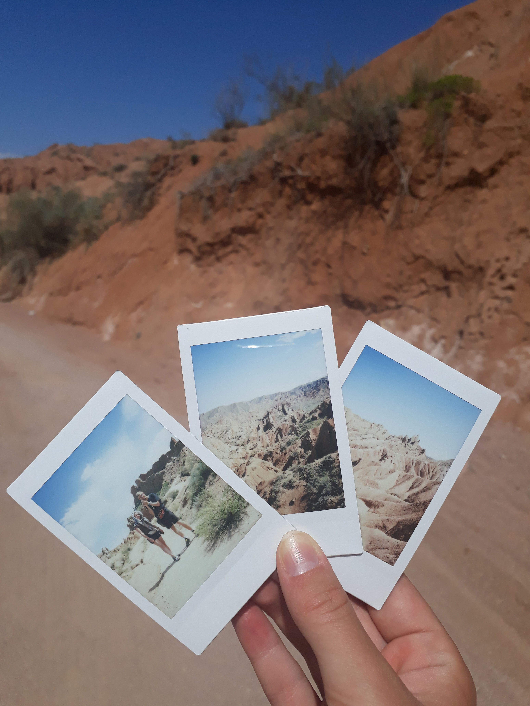
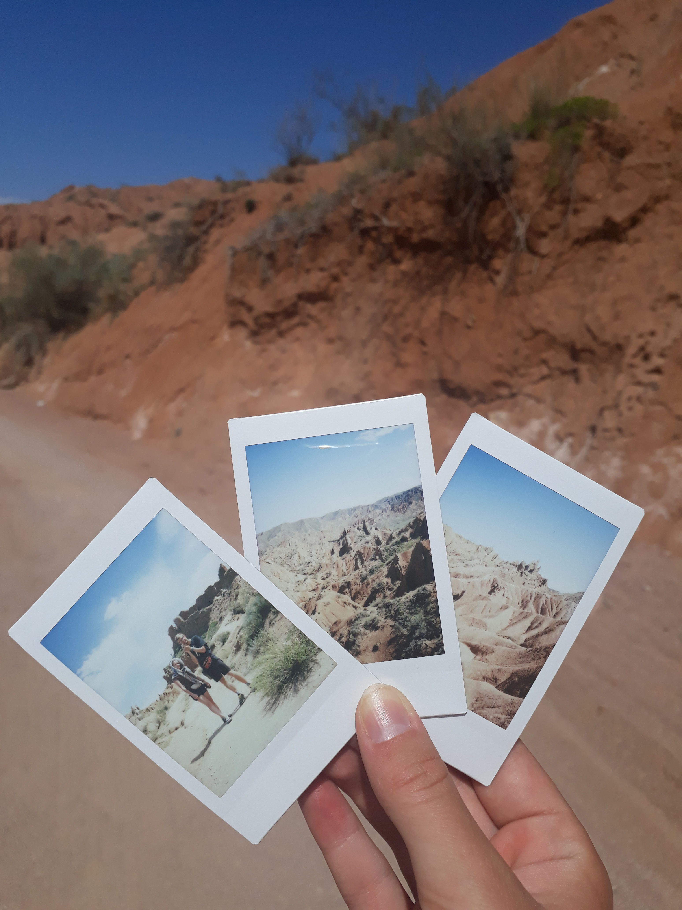
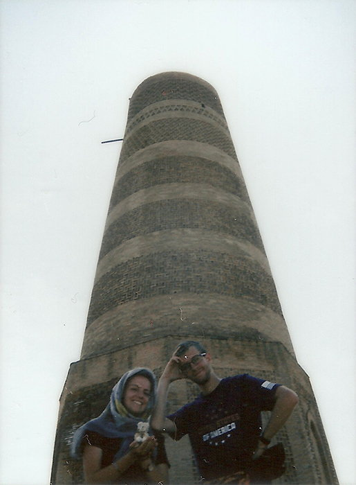
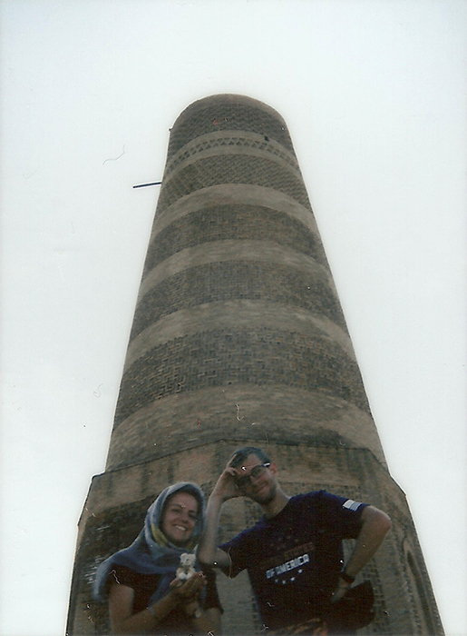

Kirgistan
Mapa
Atrakcje
Kegen to ostatnia miejscowość przed granicą Kazachsko Kirgiską. Problem jest taki, że droga prowadząca do granicy jest tragiczna. Wygląda, jakby była w budowie (ale żadnych pracowników czy pojazdów budowlanych nie kojarzę), momentami są to trzy drogi, przy czym w każdym momencie może się nagle skończyć i trzeba wtedy przejechać na inną. Z tego powodu mało kto chce tam jechać i drogo sobie liczą za podwiezienie. Na samej granicy dużo robi bycie Polakiem, kontrola idzie wtedy znacznie szybciej niż dla innych narodowości, ale i tak trzeba się liczyć, że pies będzie obwąchiwał bagaże, a strażnicy przeszukiwali. Po przejściu przez wszystkie kontrole można łapać stopa albo taxi. Można też pójść 5km do główniejszej drogi, gdzie ruch jest więcej, co swoją drogą polecam o tyle, że są tam piękne widoki na ośnieżone góry, pasące się konie i pola.
Karakol jest jedną z moich ulubionych miejscowości, pomimo niewielu atrakcji turystycznych. Tutejszą perełką na pewno jest stara, piękna drewniana cerkiew rosyjska. Wejście jest darmowe, ale wewnątrz niestety nie można robić zdjęć. Poza tym ciekawostką może być złoty pomnik Lenina oraz sklep z antykami, czyli malutki pokoik w prywatnym kirgijskim domu, gdzie można porozmawiać z przemiłym właścicielem, a i nabyć ciekawe rzeczy (stąd pochodzi 20-letni film do analoga). Miejscem, którego nie można ominąć jest bazar. Całkiem sporych rozmiarów w większości składający się z przerobionych na kramy kontenerów. Jak to na bazarach, można tam znaleźć wszystko i zdecydowanie więcej niż w sklepach spożywczych. Warto zagłębić się w najdalsze kąty bazaru, jako że część warzywna znajduje się na jego końcu, idąc od centrum miasta.
Kolejnym ważnym punktem jest informacja turystyczna, gdzie można wypożyczyć sprzęt trekkingowy, kupić mapy, wynająć przewodnika, wykupić wycieczke w góry i zapytać o cokolwiek związanego z górami. Osoby, które tam pracują, bardzo dobrze mówią po angielsku i chętnie pomagają, aczkolwiek jeśli chodzi o pogodę, to posługują się tylko wujkiem google, więc trzeba polegać na przeczuciach i szczęściu. Jeśli chodzi o wycieczki górskie, większość szlaków jest mało uczęszczana oraz nie mają żadnych oznaczeń, toteż warto zakupić mapę w Karakolu i pobrać mapy na maps.me. Dla mnie to największy urok tych gór, że ma się je dla siebie, bez śladów ludzkiej bytności (poza pasterzami i stadami koni i krów), a szlaki nie zaburzają widoków. Trzeba tylko uważać, by się nie zgubić i przygotować, że obrany kierunek będzie wymagał cofnięcia się i spróbowania podejścia od innej strony. Problemem może być również sama wysokość gór. Ciężko znależć jednodniowe wycieczki. Większość tras zajmuje kilka dni, ale te widoki! Nic nie może się równać z obserwowaniem chowającego się słońca za wierzchołkami gór, popijając herbatę i jedząc czekoladę po całym dniu wspinaczki, tylko po to, by rano ujrzeć słońce wychylające się zza wzniesień i powoli ogrzewające górskie powietrze. Przy wtórze nieustającego szelestu wody z pobliskiego strumienia oraz pojedynczych ptasich głosów i czegoś w rodzaju naszego świastaka, taka sceneria nadaje światu przez chwilę magicznego wydźwięku.
Idąc w góry, wybraliśmy trzydniową trasę wychodzącą z miejscowości Boz Uchuk do trzech jezior górskich o nazwie Boz Uchuk... Żeby tam dojechać, wystarczy złapać marszrutkę do jakiejś dalszej miejscowości i poprosić kierowcę, by się zatrzymał jak najbliżej drogi prowadzącej do miejscowości, która ma długość ok 1,5km. Dalej zaczyna się już podejście. Miejscami łagodne, miejscami bardziej strome, generalnie powiedzialabym, że szlak jest bardzo przyjemny, a droga szeroka i trudno ją zgubić. Uważać trzeba jednak na deszcze, bo po nich szlak zamienia się w kleiste błotko, co sprawia, że spacer robi się uciążliwy.
Skazka (Fairytale Canyon) to jedno z piękniejszych miejsc na naszej trasie, ale też jestem wielką fanką skalno-pustynnych klimatów. Dojazd jest dość prosty, wystarczy poprosić kierowcę marszrutkę o zatrzymanie się przy drodze doprowadzającej do kanionu. Jest tam stróżówka, gdzie trzeba uiścić opłatę (można wjechać samochodem, na końcu drogi jest parking) i jeżeli potrzeba można poprosić o przechowanie bagażu (my zostawiliśmy plecaki i odebraliśmy je wracając bez dodatkowych opłat). W samym kanionie nie ma wody, więc należy się uzbroić w dość duże ilości, jako że jest tam gorąco. Kolejną podpowiedzią do zwiedzania jest założenie butów górskich. Oczywiście są ludzie spacerujący wesoło w klapkach, ale powiedziałabym, że nie jest to najbezpieczniejsze. Ścieżki są bardzo wąskie, a podłoże wyłożone drobniutkimi kamyczkami, które nadają mu śliski charakter. Pomijam fakt, że część ścieżek jest dość stroma. Plusem natomiast jest to, że można chodzić wszędzie. Nie ma żadnych zakazów, a ścieżki przypominają bardziej wskazówkę niż wymóg... :D
Ciekawostką może być Aalam Ordo, porzucony utopijny projekt nad jeziorem Issyk Kul, gdzieś pomiędzy Bokonbayevo i Tosorem. Miało być to miejsce nauki, kultury i religii, gdzie dzieci i młodzież uczyłaby się od starszyzny ich wiedzy i mądrości. Bez ksiażek i lekcji. Brzmi to jak nawiązanie do antycznych form nauk filozofów. Niestety rok po rozpoczęciu budowy, prezydent został odsunięty od władzy, a pomysł podupadł. W tej chwili została po tym miejscu wielki pomnik (z daleka przypominający buddę) na wzniesieniu po drugiej stronie drogi, otoczony malowanym płotem (dość dziwnie przypominający mi o murze berlińskim...) plac, który gdzieniegdzie przypomina jurty (zamiast baszt, wieżyczek są tam ceglane jurty). Na wprost zdobionej bramy znajduje się coś na kształt sceny, czy miejsca spotkań i właściwie tyle. Nie zatrzymaliśmy się tam, więc nie wiem, czy da się wejść i zwiedzić to miejsce dokładniej.
Wiecej informacji na tej stronie: kliknij :)
W drodze do naszego miejsca noclegowego nad Issyk Kul, zatrzymaliśmy się w Bokonbayevo. Jest to niewielkie miasteczko, które aż kipi śladami po bytności Rosjan. Naszym jedynym celem było zjedzenie obiadu i zakupienie czegoś na śniadanie. Kupiliśmy tu najtańsze na naszej drodze pomidory, ale obiadu wolę nie wspominać... Najlepiej jednak wspominam stąd uprzejmość miejscowych. Byli bardzo serdeczni i uśmiechnięci, przez chwilę jeden z Kirgizów nam towarzyszył, żeby dowiedzieć się, kim jesteśmy i skąd.
Kiedy wyszliśmy z miasta, czekaliśmy na przystanku, próbując złapać kolejnego stopa, zobaczyliśmy na wzniesieniu cmentarz. I tu muszę się na chwilę zatrzymać, bo cmentarze w Kirgistanie i Kazachstanie są warte uwagi. Większość wygląda, jakby była zapomniana i stara, płoty się pochylają we wszystkie strony, a roślinki rosną, gdzie popadnie. Jednak kształt grobów jest niesamowity. Wiele z nich ma kopułki, przypominając tym samym małe świątynie. Zwykle też nie są zbyt blisko miejscowości, tylko pośrodku pola lub jak w tym przypadku na wzniesieniu poza miastem.
Issyk Kul - to największe jezioro w Kirgistanie, które przyciąga masę turystów, głównie od strony północnej, gdzie jest więcej hotelów i plaż. Nasze doświadczenie nie było jednak przyjemne... otoż woda z tego jeziora jest paskudna. Nie da się jej pić w żadnym wypadku, a wieczorem przy brzegu unosiło się bardzo dużo roślinnych śmieci, co sprawiło, że wchodzenie do wodu było mało przyjemne.
Kolejnym punktem na naszej trasie była Wieża Burana. Nie jest ona niczym fascynującym według mnie, ale ponieważ akurat jechaliśmy stopem z para Francuzów, którzy obiecali nas podwieźć do samego Bishkeku (od miejsca, w którym nocowaliśmy nad Issyk Kul) pod warunkiem, że będziemy mogli się zatrzymać przy wieży, zgodziliśmy się. Zdecydowanym plusem tego miejsca jest ładnie opisana na tablicach informacyjnych historia wieży i wszystkiego, co znajduje się dookoła.
Potem był już tylko Bishkek, a którego planowaliśmy podjechać do Ala Archa, ale ze względu na moją nogę oraz problemy dojazdowe, zrezygnowaliśmy z tego planu. Pierwszym skojarzeniem z Bichkekiem, jest kurz, hałas i stare budownictwo. Większość bloków straszy swoi wyglądem, nawet w centrum miasta. Nie ma tam też zbyt wiele do zobaczenia. Warto odwiedzić bazar, meczet i... w sumie tyle. Nie mieliśmy tam, co robić. Ceny też są wyższe niż innych częściach kraju. Było to też jedyne miejsce, gdzie nas oszukali i kazali zapłacić znacznie więcej niż powinniśmy. Zgaduję, że uczciwość znika wraz z wielkością miasta.
Stąd też ruszają pociągi w stronę Uzbekistanu, problemem jest jedynie to, że tygodniowy rozkład jazdy mieści się na połowie telewizorka... a pociąg do Taskentu odjeżdża raz w tygodniu. Za to każdy pociąg ma od dwóch do czterech klas standardu do wyboru.
Noclegi
- W Karakolu wszystkie noce spędziliśmy w Park Hotel i uważam, że to jedyny słuszny wybór. Właścicielka jest bardzo miła, śniadania robi ogromne i na wybraną godzinę, herbata i kawa jest dostępna 24/7, można też przechować rzeczy, kiedy idzie się w góry i za dodatkową opłatą zrobić pranie. Jedyny kruczek jest taki, że na bookingu jest drożej niż na miejscu i nie jest to najtańsze miejsce do pia. Ale coś za coś ;)
- W Bishkeku skorzystaliśmy z Compass Hostel. Jest ładnie, dużo łazienek i w dobrym umiejscowieniu (blisko centrum, sklepy i kantory), ale żeby nie było zbyt pięknie, to zatruliśmy się śniadaniem...
Jedzenie
Jeżeli chodzi o jedzenie, to w całym kraju można dostać mięso z cebulą w każdej postaci: w cieście, z makaronem, ryżem, w innym cieście, w kształcie pieroga, w kształcie kwadrata, w postaci chipsów. W pewnym momencie zaczęłam się zastanawiać, czy może nie mają odświeżacza powietrza o takim zapachu... Przy czym mięso bywa różne wołowina, baraniana lub... konina i bardzo często zamawiając, nie wiadomo, na co się trafi. Aczkolwiek zawsze można zapytać kelnera. Plusem jedzenia jest to, że jest bardzo tanie. Zdarzało nam się za obiad dla dwóch osób z herbatą i dodatkowym chlebem (oraz porcjami na prawdę przyzwoitymi) zapłacić 11zł, a za kilka pomidorów na targu mniej niż 20gr... (a i tak nie wiem, czy nie sprzedawczyni nie kazała nam zapłacić więcej, bo jesteśmy turystami).
Miejsca i jedzenie godne polecenia w Karakolu:
- Przy ulicy Abrahmanov (na wysokości parku) jest mały ryneczek, na którym jedliśmy bardzo dobre placki z serem od gospodyni, smażące je przez większość dnia.
- Warto też zjeść coś na głównym bazarze, turystów prawie tam nie ma, a sporo miejscowych tam jada. U nas niestety posmakowanie Kirgiskiej wersji zimnego ramen skończyło się lekkim zatruciem, ale i tak twierdzę, że warto.
- Najlepiej wspominam restauracje (wydaje mi się, żę była na ulicy Koenkozov po lewej stronie, idąc od Abrahmanov. Dokładnie na przeciwko znajduje się informacja turystyczna, o której pisałam wcześniej), gdzie zapłaciliśmy słynne 11zł za obiad. Swoją drogą, wydaje mi się, że to tam właśnie doświadczyłam najlepszego plovu przez cały wyjazd. Myślę, że jedynym konkurentem był ten z Centrum plovu w Tashkencie.
Inne
W całym kraju drogi są dość bardzo wątpliwej jakości, a przemieszczanie się bez własnego samochodu jedynie za pomocą marszrutek (które, jak wiadomo, jeżdża jak chcą), stopem lub taxi. Każdy jest potencjalnym taksówkarzem, więc z tym akurat problemu nie ma. Pociągi nie istnieją. Jedyną trasą jest bodajże pociąg relacji Bishkek-Tashkent (jadący 20h przez Kazachstan - jeeej, 4 odprawy celne w środku nocy). Wyjeżdżając z kraju, warto pozbyć się całej gotówki, bo w ciężko znaleźć potem kantor z walutą kirgiską w innych krajach (nawet tak bliskich jak Uzbekistan i Kazachstan).
 



 

 
